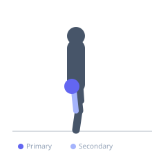
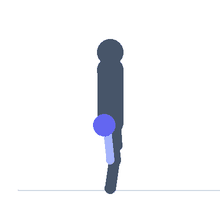

Exercise guide / Pendulum Quadruped Hip Extension
Pendulum Quadruped Hip Extension
A glute isolation exercise performed on all fours, extending one leg backward and upward with the knee bent at 90 degrees. This movement isolates the gluteus maximus through hip extension while minimizing hamstring involvement due to the bent-knee position.
Primary muscles
gluteus maximus
Secondary muscles
gluteus medius
biceps femoris long head
Stabilizers
transverse abdominis
external oblique
Equipment
No Equipment (Bodyweight)
Optional
Cable Machine (Low Pulley)
Resistance Band (Loop / Mini Band)


Starting position
- Begin on all fours with hands under shoulders and knees under hips. Working leg has the knee bent at 90 degrees.
Setup
- No equipment needed. Position on a padded floor or mat.
Steps
- Step 1: Keeping the knee bent at 90 degrees, drive the working heel toward the ceiling.
- Step 2: Extend the hip fully at the top — sole of the foot faces the ceiling.
- Step 3: Squeeze the glute maximally at the top position.
- Step 4: Return the knee toward the floor in a controlled manner.
Coaching cues
- Drive the heel to the ceiling
- Squeeze the glute at the top
Breathing
- Exhale as the leg lifts. Inhale on the return.
Range of motion
- Full hip extension at the top with the thigh in line with or slightly above parallel to the floor.
Tempo
- 2-1-2-0
Common mistakes
- Hyperextending the lower back to gain range instead of using glute strength
- Rotating the hip to the side rather than extending straight back
Safety
- Keep the lower back neutral — do not let it arch aggressively
Training
- hypertrophy: 8–15 reps
- endurance: 15–25 reps
- hypertrophy: 3–4 sets
- endurance: 2–3 sets
- Rest: {'hypertrophy': 90, 'endurance': 45}